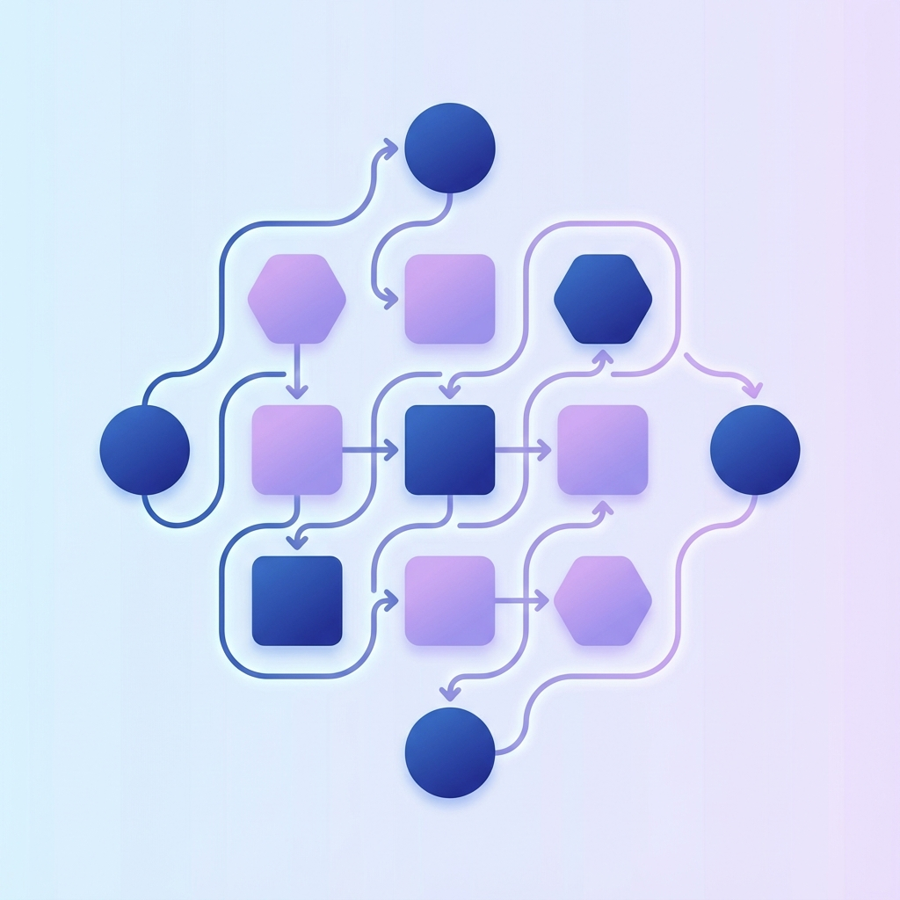

LangGraph 기본개념 (초보자용)
LangGraph는 어렵게 느껴질 수 있지만, 사실 "데이터 흐름을 정해진 순서대로 처리하는 시스템"이라고 생각하면 이해하기 쉽습니다.

1. 핵심 용어 이해하기
LangGraph의 핵심 개념을 일상적인 비유로 바꿔서 이해해 보겠습니다.
| 용어 | 비유 | 설명 |
|---|---|---|
| State (상태) | 공용 메모장 | 모든 작업 단계에서 공유하고 업데이트하는 데이터 저장소입니다. |
| Node (노드) | 작업 단계 | 메모장의 데이터를 읽어서 특정 작업을 수행하고 결과를 다시 메모장에 쓰는 함수입니다. |
| Edge (엣지) | 흐름 선 | 다음 작업 단계로 어떻게 이동할지 결정하는 규칙입니다. |
| Graph (그래프) | 전체 프로세스 | 노드와 엣지, 상태가 하나로 묶인 전체 작업 설계도입니다. |
2. 데이터 처리 흐름 (도식화)
노드들이 상태(State)를 중심으로 어떻게 상호작용하는지 살펴보세요.

개념적 구조 (Mermaid)
flowchart LR
subgraph Graph [LangGraph 시스템]
START((시작)) --> NodeA[작업 노드 A]
NodeA --> NodeB[작업 노드 B]
NodeB --> END((종료))
State[(공용 상태 데이터)]
NodeA -.-> State
NodeB -.-> State
end3. 사전 준비 (uv 설정) 🛠️
코드를 실행하기 전, uv를 사용하여 프로젝트를 초기화하고 필요한 라이브러리를 설치해야 합니다.
4. 단계별 구현 가이드
초보자도 따라 할 수 있도록 가장 단순한 형태의 그래프를 만들어 보겠습니다.
1단계: 상태(State) 정의
먼저 시스템이 어떤 데이터를 다룰지 정해야 합니다. 여기서는 메시지를 담을 리스트를 정의합니다.
from typing import Annotated
from typing_extensions import TypedDict
from langgraph.graph.message import add_messages
# 상태 정의: 메시지 목록을 상태로 관리
class State(TypedDict):
# add_messages는 새로운 메시지를 기존 목록에 추가해주는 역할을 합니다.
messages: Annotated[list, add_messages]
[참고] 초보자를 위한 파이썬 문법 팁 💡
LangGraph 코드를 보며 가장 당황스러운 부분이 바로 TypedDict와 Annotated일 것입니다. 아주 쉽게 비유해 드릴게요.
1. TypedDict: "똑똑한 이름표가 달린 바구니"
보통 파이썬의 dict는 아무 데이터나 막 넣을 수 있습니다. 하지만 TypedDict는 "이 바구니(딕셔너리)에는 반드시 이 이름의 정보가 들어있어야 하고, 그 정보는 이런 타입이어야 해!"라고 미리 약속하는 것입니다.
* 왜 쓰나요?: 나중에 코드를 짤 때 오타를 방지해주고, 어떤 데이터가 들어올지 한눈에 알 수 있게 해줍니다.
2. Annotated: "추가 메모가 붙은 이름표"
messages: list라고만 하면 "messages는 리스트야"라는 뜻이죠. 여기에 Annotated[list, add_messages]라고 쓰면 다음과 같은 의미가 됩니다.
* list: "이 데이터의 진짜 본체는 리스트야."
* add_messages: "아, 그리고 LangGraph야! 새로운 메시지가 들어오면 예전 꺼를 지우지 말고 뒷부분에 합쳐줘(Add)."
즉, Annotated는 데이터 타입 옆에 "이 데이터를 어떻게 다룰지"에 대한 특별 지시사항을 적어두는 포스트잇이라고 생각하면 됩니다!
- add_messages라는 포스트잇이 붙어있어야 대화 내용이 사라지지 않고 차곡차곡 쌓이게 됩니다.
2단계: 노드(Node) 정의
실제 작업을 수행할 함수를 만듭니다. 입력받은 상태를 확인하고 새로운 내용을 추가합니다.
def my_node(state: State):
# 현재 상태에서 메시지를 읽어와서 처리를 수행합니다.
print(f"현재 메시지 수: {len(state['messages'])}")
return {"messages": [("ai", "작업이 완료되었습니다!")]}
3단계: 그래프(Graph) 구축
여기서 초보자분들이 가장 많이 하는 질문이 있습니다.
"이미 State를 정의했는데, 왜 또 StateGraph(State)라고 선언하고 거기에 노드를 붙여야 하나요?"
이유는 아주 간단합니다: - State는 데이터가 담길 '그릇의 모양' (설계도)이고, - StateGraph는 그 그릇을 들고 다니며 실제로 일을 할 '작업장 전체'이기 때문입니다.
workflow = StateGraph(State)라고 선언하는 것은, "이제부터 이 작업장 안의 모든 노드(작업자)들은 'State'라는 모양의 그릇만 사용하도록 규칙을 정하겠다!"라고 선포하는 것과 같습니다. 이렇게 해야 모든 노드가 서로 같은 데이터를 공유하며 협업할 수 있습니다.
from langgraph.graph import StateGraph, START, END
# 1. 그래프 빌더 생성 (State라는 규칙을 가진 작업장 만들기)
workflow = StateGraph(State)
# 2. 노드 추가 (이 작업장에 작업자 배치하기)
workflow.add_node("process_node", my_node)
# 3. 엣지 연결 (작업자 사이의 흐름 설정)
workflow.add_edge(START, "process_node")
workflow.add_edge("process_node", END)
4단계: 컴파일 및 실행
설계도를 바탕으로 실제 실행 가능한 앱을 만듭니다.
# 1. 컴파일
app = workflow.compile()
# 2. 실행
result = app.invoke({"messages": [("user", "안녕하세요")]})
# 결과 출력
print(result["messages"])
4. 요약 📝
- State: 한 바구니에 담긴 공유 데이터
- Node: 바구니에 든 데이터를 처리하는 작업자
- Edge: 작업자 사이의 이동 경로
- Graph: 이 모든 흐름이 담긴 설계도
LangGraph는 이처럼 복잡한 로직을 작은 단위(Node)로 나누고, 이를 유연하게 연결(Edge)하여 관리할 수 있게 해주는 강력한 도구입니다.